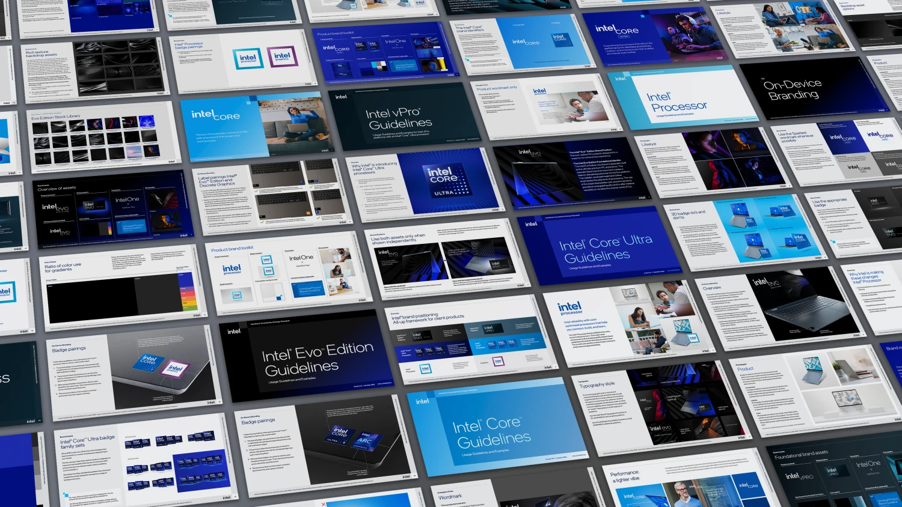
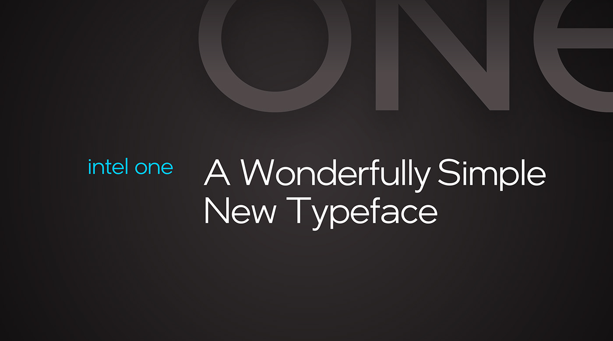
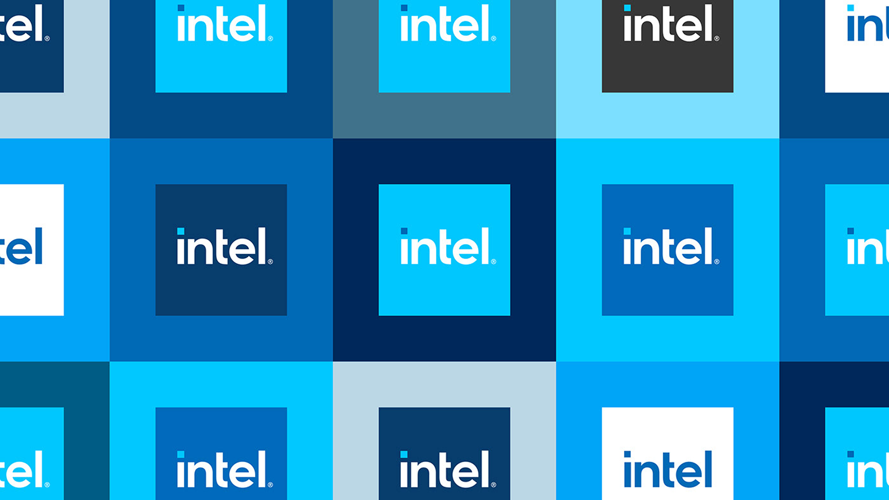
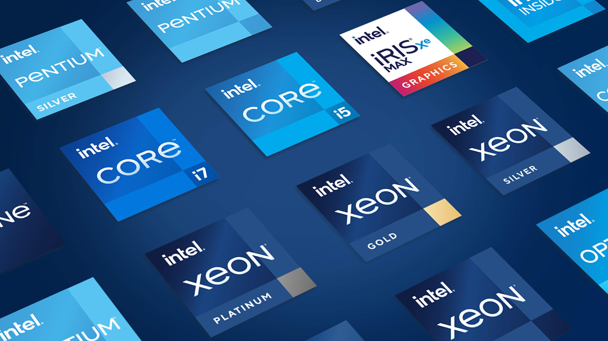

Dynamic spark motion system. Bringing the Intel brand to life.
GALLERY

Core brand identity exploration. Establishing visual hierarchy and system architecture.

Brand application framework. Flexible system for digital and print touchpoints.

Intel Core processor branding. Premium tier visual language and motion.

Typography and color system. Building consistency across product lines.

Badge system development. Modular approach for product differentiation.
Title screen animation exploration. Cinematic approach to brand storytelling.
Intel Evo badge animation. Premium laptop platform identity.

Product ecosystem visualization. Comprehensive portfolio architecture.
Environmental scene rendering. 3D visualization and lighting studies.

Marketing campaign assets. Cross-platform brand consistency.

Final brand guidelines. Comprehensive system documentation.